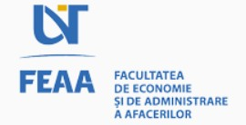

I began my software testing journey at RoSite in February 2020, where I discovered a passion for ensuring software reliability. I find fulfillment in actively working on various tasks, valuing continuous learning and collaborative teamwork. My goal is to expand my expertise in both manual and automated testing, contributing significantly to the creation of robust software solutions, while growing professionally in a dynamic work environment. I am eager to embrace new challenges and learning opportunities.
About me
Professional experience
Projects
Below are some of the key projects I have contributed to. For a comprehensive list of all projects, please refer to the "More" section on the right.

Municipiul Alba

Primăria Abrud

Municipiul Sector I București

Municipiul Aiud

Primăria Florești
Education

Bachelor's degree - Faculty of Economics and Business Administration
Economic and Informatics | Timișoara
2020 - 2023
Courses & Certifications
Software Tester Transilvania Digital Innovation 4.0
Date acquired: Aug 2023
Certification in Software Testing from Transilvania Digital Innovation 4.0, focusing on advanced manual and automated testing techniques using Java and Selenium WebDriver.